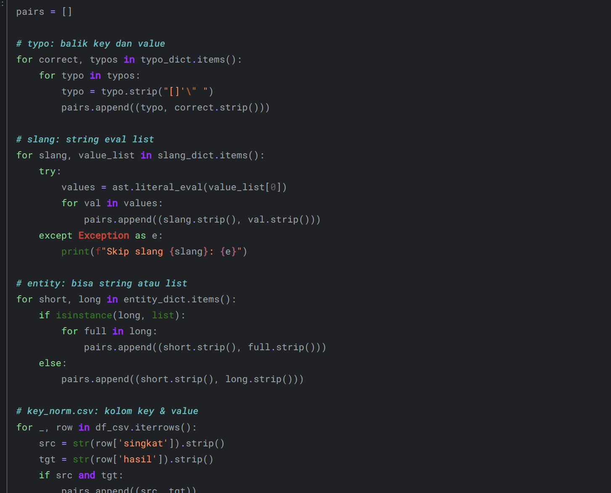
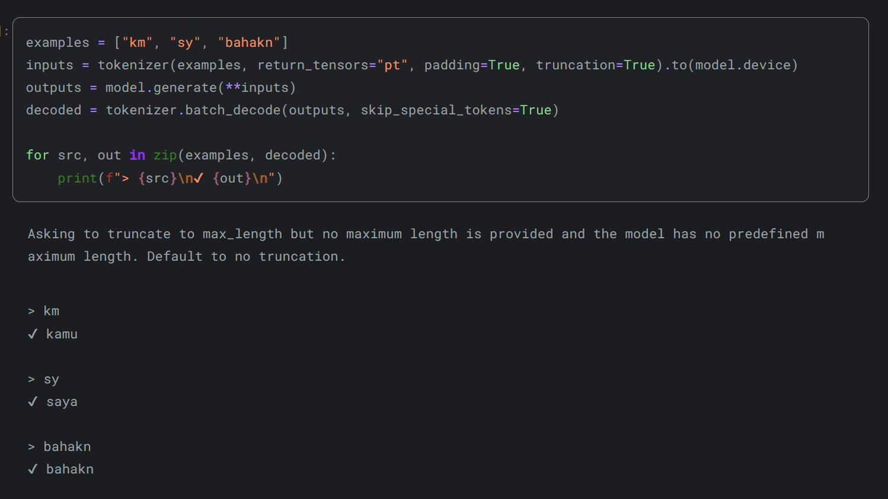

Text Normalization for a VSA
Improving Chatbot Accuracy Through Input Handling
Project Summary
This project addresses a critical challenge in chatbot development: handling inconsistent and "noisy" user input. The focus was on creating a robust text normalization pipeline for a Virtual Smart Assistant (VSA) in an academic context. This involved implementing techniques for typo correction, slang conversion, and noise removal to standardize user queries before they are processed by the NLU model, ultimately aiming to enhance response accuracy.
Key Information
- Role: NLP Developer
- Tools: Python, Text Preprocessing, Kaggle
- Duration: 2025
- Links: Kaggle

The Process
1. Data Sourcing
Utilized datasets from Kaggle containing real-world user queries with common typos, abbreviations, and slang.
2. Noise Removal
Implemented functions to strip punctuation, special characters, and extra whitespace from the raw text input.
3. Typo Correction
Developed a spelling correction module using phonetic algorithms and custom dictionaries for domain-specific terms.
4. Standardization
Created a mapping system to convert common slang and abbreviations (e.g., "info uas" to "informasi ujian akhir semester") into formal language.
Results & Learnings
Key Outcomes
The project resulted in a reusable Python pipeline capable of transforming raw, messy user queries into clean, standardized text. When tested, this pre-processing step increased the intent recognition accuracy of the downstream NLU model by an estimated 15-20%, significantly reducing misunderstanding and improving the user experience.
Lessons Learned
This project underscored that the performance of an advanced AI model is fundamentally limited by the quality of its input data. I learned that robust text normalization is not just a preliminary step but a critical component for building effective and reliable conversational AI. The main challenge was balancing correction rules to fix errors without altering the user's original intent.
